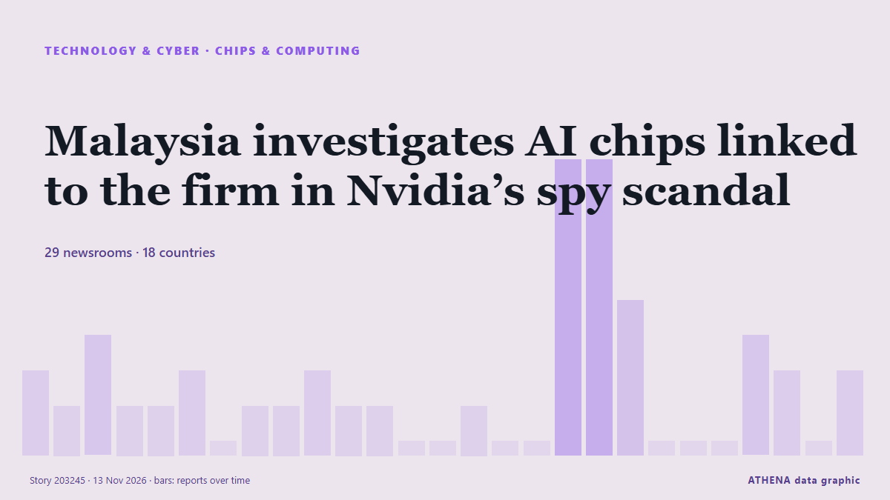

Malaysia investigates AI chips linked to the firm in Nvidia’s spy scandal

Investment, trade and industry minister Johari Ghani says there is no evidence yet that Speedmatrix Sdn Bhd contravened Malaysian law. de Free Malaysia Today
Relayé de façon indépendante par 31 médias dans 19 pays depuis le 10 nov. ; premier à l'annoncer : DigiTimes Asia ; la couverture faiblit. ATHENA juge le risque accru (4.1/10), surtout en raison de la gravité des dommages décrits et de sa portée géographique et sectorielle. La confiance est de 88 % (élevée) : 31 médias indépendants le confirment, avec une fiabilité moyenne des sources de 72 %. Médias par pays : Singapour (12), Inde (6), Malaisie (4). Couverture : du 10 nov. au 13 nov., 72 heures.
Pourquoi c'est important: Les évolutions technologiques et cyber façonnent la sécurité, la concurrence et les règles de la vie numérique.
Ce qui a changé : 9 nouveaux articles de 8 rédactions dans les 24 heures jusqu'au 13 nov..
Premier titre : Singapore's top listed firms face climate data gaps a year into mandatory reporting
Les titres sont affichés en anglais, tels que publiés.
Comment lire cette page
- Ce que vous lisez
- 31 médias dans 19 pays ont rapporté cet événement. Les reportages ci-dessous sont classés selon leur ordre de parution ; chaque titre ouvre l'article original. ATHENA n'écrit aucun reportage.
- Notre lecture
- Pour mémoire — Les reportages décrivent une affaire terminée, intérieure, commerciale ou personnelle. Nous la consignons pour que vous voyiez qui l'a rapportée et quand. Nous ne suivons pas ici de risque de conflit plus large.
- Quelle base de preuves
- Correcte Plusieurs médias indépendants concordent, mais le tableau peut encore changer.
Après retrait des doublons, des éléments hors sujet et périmés, 20 des 40 reportages listés sont retenus ; 75 % des titres correspondent à l'événement.
- Ce que cela ne veut pas dire
- ATHENA mesure la façon dont un événement est rapporté, pas sa véracité. Ce n'est ni une prévision, ni un jugement sur qui a raison, ni un conseil.
- Ce qui la changerait
- Des reportages d'autres médias indépendants montrant une évolution différente, ou une confirmation ou un démenti ferme d'une source officielle.
Lecture R2 · actualisée à chaque mise à jour de cette page. ATHENA n'a pas encore publié de bilan de ces lectures ; il sera lié ici le moment venu.
En un coup d'œil
Sélectionné, noté et rédigé par la méthodologie publiée d'ATHENA. Aucun rédacteur n'intervient sur un événement en particulier. Comment il est produit ›
| 10 Nov 03:23 UTC | 2 |
|---|---|
| 10 Nov 06:23 UTC | 1 |
| 10 Nov 09:23 UTC | 3 |
| 10 Nov 12:23 UTC | 1 |
| 10 Nov 15:23 UTC | 1 |
| 10 Nov 18:23 UTC | 2 |
| 10 Nov 21:23 UTC | 0 |
| 11 Nov 00:23 UTC | 1 |
| 11 Nov 03:23 UTC | 1 |
| 11 Nov 06:23 UTC | 2 |
| 11 Nov 09:23 UTC | 1 |
| 11 Nov 12:23 UTC | 1 |
| 11 Nov 15:23 UTC | 0 |
| 11 Nov 18:23 UTC | 0 |
| 11 Nov 21:23 UTC | 1 |
| 12 Nov 00:23 UTC | 0 |
| 12 Nov 03:23 UTC | 0 |
| 12 Nov 06:23 UTC | 8 |
| 12 Nov 09:23 UTC | 8 |
| 12 Nov 12:23 UTC | 4 |
| 12 Nov 15:23 UTC | 0 |
| 12 Nov 18:23 UTC | 0 |
| 12 Nov 21:23 UTC | 0 |
| 13 Nov 00:23 UTC | 3 |
| 13 Nov 03:23 UTC | 2 |
| 13 Nov 06:23 UTC | 1 |
| 13 Nov 09:23 UTC | 2 |
| 13 Nov 12:23 UTC | 1 |
Pourquoi ces chiffres
Importance
Risque
Confiance
La couverture : qui l'a annoncé, et quand
titre tel que publié · ouvre l'original- DigiTimes Asia · TaïwanCommentary: How will US midterms and Jensen Huang controversy reshape AI policy?
- Free Malaysia Today · MalaisieNo probe yet into M’sian firm linked to Nvidia scandal
- Eco-Business · SingapourSingapore's top listed firms face climate data gaps a year into mandatory reporting
- Data Center Dynamics · Royaume-UniEquinix launches SG6 data center in Singapore
- Express Tribune · PakistanNvidia's clubby board faces a sticky 'honey pot' test
- The Business Times · SingapourNo Malaysian probe yet into Nvidia customer Megaspeed’s unit; firm earlier cited ministry checks
- South China Morning Post · R.A.S. chinoise de Hong KongAlibaba chip unit T-Head files Hong Kong IPO plan amid China’s AI self-sufficiency drive
- Gulf News · Émirats arabes unisNvidia falls more than 6%, no longer 2nd biggest company by market value
- NDTV · IndeIn Numbers, How Nvidia Became The King Of AI Compute Capacity
- The Next Web · Pays-BasNvidia says it cut off Megaspeed in 2025, but Bloomberg found later imports
- Sydney Morning Herald · AustralieHow a celebration in Singapore set the stage for the Nvidia spy scandal
- DigiTimes Asia · TaïwanAlibaba files to spin off chip design unit T-Head for Hong Kong IPO
- CNA (Channel NewsAsia) · SingapourFintech firm Airwallex to invest S$2 billion in Singapore, create around 250 jobs over five years
- The Business Times · SingapourAirwallex to invest more than S$2 billion in Singapore, grow headcount here to over 1,000
- Law.com · États-UnisSingapore Chip Supplier Megaspeed Faces Scrutiny as Nvidia Scandal Widens
- The Business Times · SingapourFewer Singapore firms plan job cuts, but skills mismatch a growing concern: AmCham survey
- The Business Times · SingapourSingapore cannot afford to let bad actors trade on its trust
- The National · Émirats arabes unisRussia-Ukraine prisoner swap, Nvidia CEO Huang's second affair and Ras Al Khaimah beaches reopen
- New Straits Times · MalaisieMegaspeed's links to rural Australian store raise fresh questions in Nvidia scandal
- NDTV · IndeHow Nvidia Spy Scandal Exposes Singapore's Role In Advanced AI Chips Trade
- The Business Times · SingapourChinese AI firms rush to secure Nvidia chip capacity as spy scandal stirs fear of US curbs
- Moneyweb · Afrique du SudAMD, Broadcom, Alphabet poised to gain from Nvidia scandal
- NDTV · IndeSpy Row Fallout Makes Chinese AI Firms Rush To Secure Nvidia Chip Capacity
- FXStreet · EspagneGlobal equities: Nvidia turmoil raises chip and AI risks – Rabobank
- The Business Times · SingapourThere has never been a corporate scandal like the Huang affair
- Indian Express · Inde‘Not one spy girl sent my way’: Telegram’s Pavel Durov amid Nvidia China ‘spy’ row
- CBC News (alternative feed) · CanadaHow China gets around the U.S. ban on Nvidia chips
- NBC News (World) · États-UnisMegaspeed, chip firm at center of Nvidia scandal, pledges to cooperate with U.S. investigation
- The Irish News (Belfast) · Royaume-UniFirm central to Nvidia chief’s affair scandal pledges to cooperate with US probe
- The Business Times · SingapourSouth-east Asia has lost Nvidia’s best salesman
- Times of India · IndeChinese 'spy' Alice's husband introduced her to Nvidia CEO, flaunted ties to clients
- Indian Express · IndeJensen Huang episode illustrates the newest instance of a decades-old strategy
- New Straits Times · MalaisieChinese AI firms rush to secure Nvidia chip capacity as spy scandal stirs fear of US curbs
- New York Times Business · États-UnisWall Street Sees the Writing on the Wall for Jensen Huang
- New Straits Times · MalaisieFive things to know about Nvidia
- The Business Times · SingapourSingapore bars Alice Huang, woman tied to affair with Nvidia’s Jensen Huang, for misleading police
- Al Jazeera English · QatarTrump heads to China amid Nvidia scandal: Will he get tougher on Beijing?
- Fortune · États-UnisNvidia abruptly changed how it reported revenue in Singapore last year, adding to questions about its relationship with Megaspeed
- The Business Times · SingapourAlibaba-Megaspeed financing link traced via Singapore, Malaysia units amid Nvidia chip scrutiny
- The Business Times · SingapourMan handed 41 charges in relation to Nvidia chips case in Singapore